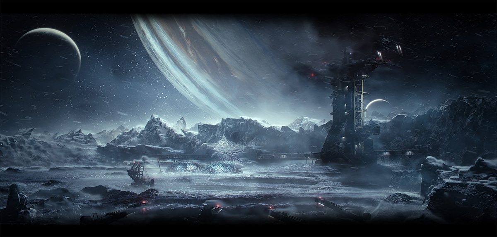

Nº001 - THE CALLISTO PROTOCOL
Publicado por Single Player by EuFM
Revisado por Alejandro Casares Carracedo
Single Player by EuFM es un proyecto dedicado a la creación de contenido y a la divulgación de videojuegos.
Todas las imágenes utilizadas en esta edición son propiedad de sus respectivos propietarios y/o licenciatarios.

The Callisto Protocol
Trescientos años más tarde, la civilización humana ha alcanzado otros planetas del sistema solar. Y el capitalismo parece que también. En la segunda luna más grande de Júpiter, de nombre Callisto, la compañía United Jupiter Company ha instalado la prisión de Ferronegro en su superficie, un complejo de máxima seguridad donde los prisioneros más peligrosos de la galaxia son hacinados en su interior.
Jugaremos como Jacob Lee, el piloto de una nave de carga destinado a entregar mercancía a la prisión, pero por circunstancias del destino, termina como recluso de Hierro Negro. Por desgracia, su porvenir empeora, ya que nada más entrar, los guardias y los presos comienzan a convertirse en criaturas monstruosas. La prisión se sume en un caos absoluto, con enemigos extremadamente peligrosas que plagan el lugar.

The Callisto Protocol quiere ir un paso más allá dentro del combate en un survival horror. Esta es una aventura lineal en tercera persona, desarrollada por Striking Distance Studios, joven compañía liderada por Glen Schofield, cocreador de Dead Space, y compuesta por varios veteranos que han trabajado con él desde entonces. La distribución ha corrido a cargo de Krafton, compañía surcoreana conocida por desarrollar PlayerUnknown's Battleground (PUBG) y encargada de dar todos los recursos necesarios al equipo de Schofield para montar un estudio de gran calidad e incluirla en su cartera de desarrolladoras.
Resulta muy difícil no comparar ambos títulos. Dead Space y The Callisto Protocol comparten tantas influencias e ideas que muchos consideran a Callisto el sucesor espiritual del primero. Ambos cuentan con una narrativa de ciencia ficción, lineal, enemigos mutantes, HUD en el personaje, etc. El estudio parece querer mantener el ADN que les definió con Dead Space, pero en esta ocasión han querido dar una vuelta de tuerca al género, acercando el jugador al enemigo con un combate bruto y diferente al que estamos acostumbrados en el survival-horror.
Por norma general, el combate cuerpo a cuerpo en los juegos de este género suele ser la opción menos utilizada. El gameplay suele limitarse a un buen catálogo de armas a distancia, la siempre amiga pistola, luego escopeta y, por último, rifles, ametralladores e incluso a veces lanzacohetes. Sucede igual en The Callisto Protocol, aunque sin lanzacohetes, añadiendo además un combate cuerpo a cuerpo, diseñado en torno a él, convirtiéndose en ocasiones en un Beat'em up cuando nos enfrentamos en un uno contra uno con el enemigo.
El enfrentamiento es muy explícito y sangriento. Los enemigos son víctimas convertidas en criaturas atroces llamadas Biófagos. Representan el conflicto de la historia, las víctimas de los acontecimientos y el terror del escenario. Si se hacen contigo, recibirás como recompensa una muerte muy explícita. El detalle dedicado a las criaturas es brutal. Las heridas que les causemos serán visibles en su cuerpo; les arrancaremos las extremidades, les volaremos las piernas y aprovecharemos lo que nos ofrece el entorno para salir con vida. Es tan sangriento que hasta su lanzamiento se ha visto cancelado en Japón precisamente por su explicitud en sus imágenes.
Los enemigos no son los únicos que provocan terror en The Callisto Protocol. La ambientación es un elemento clave, diseñada detalladamente para sumergirnos en la prisión de Black Iron y en la luna muerta de Callisto. En lo que más destaca precisamente el juego es en su extrema calidad de gráficos, de animaciones iluminación y diseño sonoro. Este juego es un portento gráfico en todos los sentidos, con una historia lineal de película y un elenco de actores al nivel de las circunstancias.
Josh Duhamel, conocido por su papel en Transformers y Las Vegas, es quien da vida al personaje de Jacob Lee. Karen Fukuhara, que da vida a Kimiko en la serie de Amazon The Boys, también cuenta con un papel protagonista, así como Sam Witwer, quien protagonizó en su día a Deacon St John en Days Gone.
El lanzamiento del juego fue el 2 de diciembre y la reacción del público ha sido bastante diversa. Todo el mundo está de acuerdo en que los gráficos en este juego son impresionantes, así como el diseño sonoro que hace morirte de miedo cada vez que tienes que cruzar una esquina. El combate, por otro lado, es lo que más ha supuesto fricciones y diferencias de opinión. También la historia y ciertas mecánicas ambientales han recibido bastantes críticas.
Por supuesto, el bajo rendimiento de la edición de ordenador con fuertes bajadas de frames y la falta de algunas opciones visuales en la edición de Xbox hicieron mella en las valoraciones. La plataforma que salió beneficiada fue la de PlayStation, siendo también cierto que el estudio recibió ayuda de Sony durante su desarrollo. La desarrolladora prometió arreglar estos errores y parece que están ello, habiendo arreglado buena parte de los errores más importante.
Aún con todo, de acuerdo con las valoraciones de metacritic, el juego ha recibido, por parte de la prensa, una valoración media entre 7,3 y 6,9, siendo la más baja la edición de Xbox, mientras que, por parte de los usuarios, la nota oscila entre el 6,9 y el 5,1, siendo esta última la valoración de la edición de PC.
A continuación, analizaré independientemente el combate, exponiendo su presentación y evolución a lo largo del juego, así como qué dice la crítica al respecto. Más adelante, hablaré sobre su ambientación que, pese a unos gráficos brutales, la ingeniera del terror que los desarrolladores han diseñado para The Callisto Protocol quizás tampoco haya sido al gusto de todos.
Ambos análisis van a contener spoilers medios de las armas, los enemigos, la ambientación, así que si te llama la atención, te aconsejo que pares aquí y que lo juegues por ti mismo, y si te apetece, vuelve y comenta qué te ha parecido y si estás de acuerdo con mi análisis.
Glen Schofield
Antes de hablar de cualquier aspecto relacionado con The Callisto Protocol o del estudio desarrollador, Striking Distance Studios, habría que partir de Glen Schofield y de cómo Krafton, empresa matriz del universo PUBG, apostó por él para formar una compañía tecnológicamente puntera de videojuegos e incluirla dentro de su ecosistema.
Glen Schofield, formado en bellas artes y negocios, es un veterano en la industria de los videojuegos con más de 20 años de experiencia habiendo liderado éxitos en venta en diferentes distribuidoras. Comenzó su carrera a principios de los años 90 como artista y director de arte y ascendió a director de juego en Crystal Dynamics para 1998. Unos años más tarde, recibió la llamada de Electronic Arts, que estaba ahí cruzando la calle, y allí trabajó para juegos como The Lord of The Rings: The Return of the King y 007 From Russia With Love. En 2008, junto a Michael Condrey, cocreó y dirigió una de las sagas más importantes de su carrera: Dead Space.
Un año después, Activision quería expandir el universo de Call Of Duty (COD) con nuevos estudios que le dieran a la saga un estilo diferente. Tras el éxito que supuso Dead Space, Glen y Michael salieron de Electronic Arts con la intención de crear juntos su propia compañía desde cero. En efecto, se juntó el hambre con las ganas de comer. Se acercaron a Activision con una propuesta: a cambio de conseguir los recursos para formar una compañía desarrolladora, trabajarían para Activision con nuevas entregas de COD en tercera persona de la calidad de Dead Space. Una llamada con el entonces director ejecutivo de Activision Blizzard, y Sledgehammer Games se convirtió en realidad.
Activision quería que el nuevo estudio desarrollara un juego COD en tercera persona como un spin-off que diera vida al universo. Sin embargo, una disputa legal de Activision con los desarrolladores principales de la saga provocó la salida abrupta de estos y de buena parte de la plantilla, por lo que Sledgehammer tuvo que formar parte del desarrollo de las entregas principales para que se lanzaran en el plazo establecido. Modern Warfare 3 (2011), Advanced Warfare (2014) y WWII (2017) fueron tres éxitos en venta.
El dúo consiguió formar una de las compañías desarrolladoras más exitosas y productivas del mercado. La idea principal con la que formaron el equipo fue la de contratar a los mejores del sector y formar un ambiente familiar dentro de la empresa. Cuenta la leyenda que cada nuevo empleado recibía una challenge coin, una moneda con la insignia y los valores de la empresa. Los candidatos a formar parte del nuevo estudio debían pasar por un largo proceso con varias entrevistas que podía durar semanas. Tuvieron la libertad de formar el equipo que querían, y lo hicieron bajo el paraguas de la tercera distribuidora más grande del mundo. A día de hoy, cuentan con filiales en Melbourne, Toronto y Guildford y tienen en plantilla a casi 500 personas.
A día de hoy, está a cargo de una de las empresas subsidiarias de Krafton, Striking distance Studios, empresa desarrolladora que formó él mismo tras dejar Activision en 2019 y para lo cual ha tenido total libertad. No me extraña; es innegable que Schofield se ha labrado una trayectoria exitosa, que ha sabido cuándo cambiar de escenario y tomar nuevos roles para seguir sacando juegos en los que primara la calidad.
La creación de SDS
La creación de Striking Distance Studios ha sido una suerte que Schofield ha ido construyendo a lo largo de su carrera y que, en realidad, le ha tocado dos veces en su vida. Tanto Activision como Krafton han sido dos compañías que han querido ampliar los universos de sus juegos populares en un momento en el que fueron convenidos por la propuesta, y el espíritu, de Glen Schofield.
La experiencia con Activision, al menos al principio, fue algo complicada. En un principio, les interesó mucho la idea de expandir el universo de Call of Duty con spin-offs en tercera persona, pero pasaron semanas hasta que tuvieron el sí definitivo. Después, desafortunadamente, abandonaron las ideas conceptuales del juego que iban a hacer y se centraron en sacar adelante Modern Warfare 3.
Con Krafton, en comparación, resultó al principio mucho más sencillo. Tras dejar Activision en 2019 y tomarse un tiempo de descanso, Schofield decidió reunirse con grandes compañías para ofrecerles una propuesta. Habló con Google, Microsoft y PlayStation sobre su nueva idea, Meteor Down, un juego survival horror en el espacio, y ver qué le podían ofrecer. Entonces, se enteró de que Kim Chang-han, CEO de Krafton, empresa matriz de PUBG, le andaba buscando para abrir un estudio en Estados Unidos y ampliar su cartera de desarrolladoras. Schofield se reunió con ellos en una habitación de hotel en Las Vegas durante Dice Summit Festival 2019.
Kim ya tenía experiencia con desarrolladores occidentales. De hecho, Brendan Green, quien acababa de salir de Daybreak Game Company, fue contactado por Kim, que se interesó por su trabajo con Arma 3 y H1Z1 y le ofreció trabajar juntos en un nuevo juego Battle Royale. Brendan acabó siendo el director creativo y el diseñador jefe de PUBG, un occidental ocupando un alto puesto coreano, curioso cuanto menos. Kim se formó como desarrollador y entiende la importancia de dar libertad a los creativos, por lo que dio a Brendan y a su equipo bastante autonomía, dando como resultado PUBG.
Con Schofield, pasó algo parecido. En la reunión que tuvieron, Kim le prometió que le darían todos los recursos necesarios para fundar su propio estudio, como subsidiaria de Krafton, y para llevar adelante la idea de crear Meteor Down como un juego dentro del universo de PUBG. En palabras de Schofield, han cumplido su palabra desde el primer día y no puede estar más agradecido.
Lo primero que hizo Glen tras el visto bueno fue contar con la ayuda de Steve Papoutsis, con quien había trabajado anteriormente en la saga Dead Space, y quien además había acompañado a Schofield a algunas de las reuniones con las distribuidoras. Glen tomó el puesto de CEO y fundador y Papoutsis el de jefe de desarrollo. Además de Papoutsis, Glen contrató a Chris Stone como jefe creativo, con quien había trabajado 20 años tanto en la saga Dead Space como en las tres entregas de COD. Para terminar de completar el equipo, contó con la experiencia de Stacey Hirata (Guitar Hero) como jefa de operaciones y Mark James (2K, LucasArts) como jefe de tecnología.
Por otro lado, el nombre del estudio, de hecho, viene de una conversación que tuvieron Papoutsis y Schofield. En su búsqueda por encontrar el nombre perfecto, Papoutsis le preguntó cuáles eran las metas que pretendía conseguir con los futuros juegos de la compañía. Glen respondió “I want it to be within striking distance of the best quality games”, que significaría que quiere que estén a muy poca distancia de los mejores juegos de calidad. En verano de 2019 nació Striking Distance Studios.
Pese a las dificultades que supuso la pandemia del COVID y el confinamiento, el estudio ya cuenta con una plantilla de más de 150 empleados. Ubicaron el estudio en San Ramon, California, y construyeron un equipo de última generación. Incluso construyeron su propio estudio de captura de movimiento (mocap), para no tener que depender de estudios externos. El único estudio con mocap de todo el Este de la Bahía de San Francisco (aparte de ILM, Industrial Light & Magic).
Un año después su inauguración en California, abrieron su segundo estudio en Zaragoza, España, con Jorge Jiménez como Director de Ingeniería creativa y Director general del estudio. Ya habían trabajado juntos en entregas para COD con el desarrollo de nuevas tecnologías. De nuevo, el nuevo estudio de España se ha enfocado en desarrollar las tecnologías (iluminación, trazado de rayos, modelado facial, simulación de gore) que permitan a los jugadores sumergirse en una experiencia visual fotorrealista nunca antes vista.
El desarrollo de The Callisto Protocol ha contado con todos los recursos necesarios para considerarse un juego triple A de enorme calidad. El estudio, además, está liderado por uno de los veteranos de la industria más enfocados en sacar los juegos con mayor calidad del mercado. Desde sus orígenes, este iba a ser un juego narrativo.